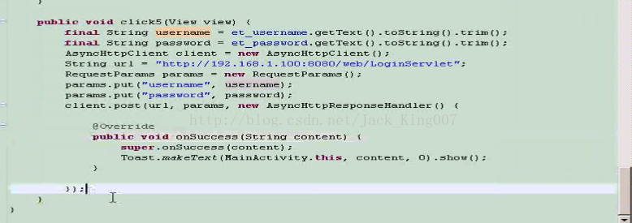

以前对于 客户端与服务器端总是不太熟悉，借着周末的事件好好的复习吧
骚年雄起吧~~~
还记步骤不？
还记得我上一篇文章 Hanlde消息处理机制的复习——网络图片下载么
上一篇文章我对于网络方面我很少提到，主要是用来复习handle消息机制的 。 安卓是不允许主线程有很多耗时操作的，而对于联网操作必须要放到 次线程的。而次线程请求的数据，而又不能放在次线程更新的，所以要放在主线程更新，所以handler消息机制的出现不是偶然。
具体步骤：
//1.开启子线程 执行一个http请求在后台执行在子线程执行
//2.子线程执行完毕后 通知ui界面更新
程序员前期要好好打基础，我们要好好听前辈的话，而到后期代码熟练以后，我要好好的偷懒~
我还记得 最火的开源项目里 第6个 正好是对于 异步+Http的封装，大家可以去github去下载， 如果单单是使用直接考入jar 就行了
我们先看一个对post 登录的封装吧 很方便 就5行代码

首先
1-2 拿到 登录帐号和密码
3.实例化 AsyncHttpclient （要用别人的东西还是要实例化的）
4.准备好一个url
5.将数据put 进去
6. 然后post 请求 （第一个参数是url，第二参数是 属性你put进来的数据 第三个是 handler jar自己封装的）
7.然后super 2个方法 也就是成功和失败 。
~~~~~~~~~~~~我是淫荡的分割线~~~~ ~~~ ~~~ 是时候自己写了
第一步 开启子线程 执行一个http请求在后台执行在子线程执行
PS：线程是用来获取数据的，你需要两个参数 一个URL 和handler 联网我们用httpclient 其中还会有一个流转String的一个工具类 然后用handler将数据发送出去
package com.xiaoxin.AsyHttp;
import java.io.InputStream;
import org.apache.http.HttpResponse;
import org.apache.http.client.HttpClient;
import org.apache.http.client.methods.HttpGet;
import org.apache.http.impl.client.DefaultHttpClient;
import android.os.Message;
public class AsyncHttpClient {
public void get(final String path, final MyHandler myhandler) {
new Thread(new Runnable() {
@Override
public void run() {
HttpClient client = new DefaultHttpClient();
HttpGet get = new HttpGet(path);
try {
HttpResponse response = client.execute(get);
InputStream is = response.getEntity().getContent();
String content = StreamTool.readInputStream(is);
// 执行成功
Message message=new Message();
message.what=1;
message.obj=content;
myhandler.sendMessage(message);
} catch (Exception e) {
// 执行失败
e.printStackTrace();
Message message=new Message();
message.what=2;
message.obj="请求失败";
myhandler.sendMessage(message);
}
}
});
}
}
关于工具类 大家好好手残好哦 StreamTool
package com.xiaoxin.AsyHttp;
import java.io.ByteArrayOutputStream;
import java.io.InputStream;
public class StreamTool {
public static String readInputStream(InputStream is) {
try {
ByteArrayOutputStream out = new ByteArrayOutputStream();
int length = 0;
byte[] buffer = new byte[1024];
if ((length = is.read(buffer)) != -1) {
out.write(buffer, 0, length);
}
is.close();
byte[] result = out.toByteArray();
return new String(result);
} catch (Exception e) {
// TODO: handle exception
}
return "转换失败";
}
}
三步：联网---》流转str--->handler发送数据 成功发送内容 不成功 发送请求失败
第二步 自定义MyHandler
PS：自定义嘛 先继承Handler 先写两个方法 成功或者失败 因为在 AsyncHttpClient 传来了 内容 所以需要加入一个参数 String content 如果这个类不熟悉的话
同学们需要去复习下 消息机制了
package com.xiaoxin.AsyHttp;
import android.os.Handler;
import android.os.Message;
public class MyHandler extends Handler {
public void OnFailure(String content) {
}
public void OnSuccess(String content) {
}
@Override
public void handleMessage(Message msg) {
String content=(String) msg.obj;
super.handleMessage(msg);
switch (msg.what) {
case 1:
OnSuccess(content);
break;
case 2:
OnFailure(content);
break;
default:
break;
}
}
}
第三步 开始用 我们定义好的类啦
你会发现 我们现在所写的格式 和 开源框架是那么的像
package com.xiaoxin.AsyHttp;
import android.app.Activity;
import android.os.Bundle;
import android.view.View;
import android.widget.Toast;
public class MainActivity extends Activity {
@Override
protected void onCreate(Bundle savedInstanceState) {
super.onCreate(savedInstanceState);
setContentView(R.layout.activity_main);
}
public void btn(View view){
//1.开启子线程 执行一个http请求在后台执行在子线程执行
String path="";
AsyncHttpClient asyncHttpClient=new AsyncHttpClient();
asyncHttpClient.get(path, new MyHandler(){
@Override
public void OnFailure(String content) {
Toast.makeText(MainActivity.this, content, 1).show();
super.OnFailure(content);
}
@Override
public void OnSuccess(String content) {
Toast.makeText(MainActivity.this, content, 1).show();
super.OnSuccess(content);
}
});
//2.子线程执行完毕后 通知ui界面更新
}
}
End-------------
下一篇内容是 用开源框架 上传文件， 其实嘛 很多程序员也不是都去了解 开源框架的，工作中使用开源框架是让你效率提高嘛